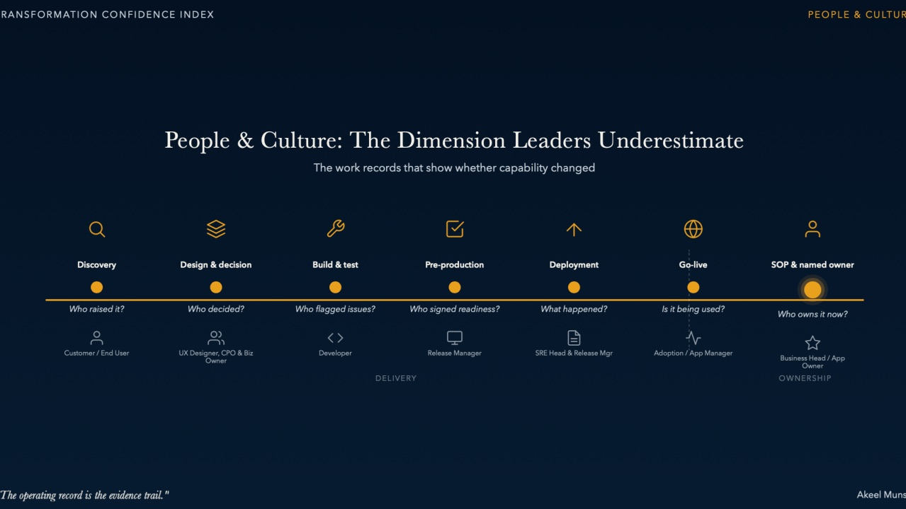
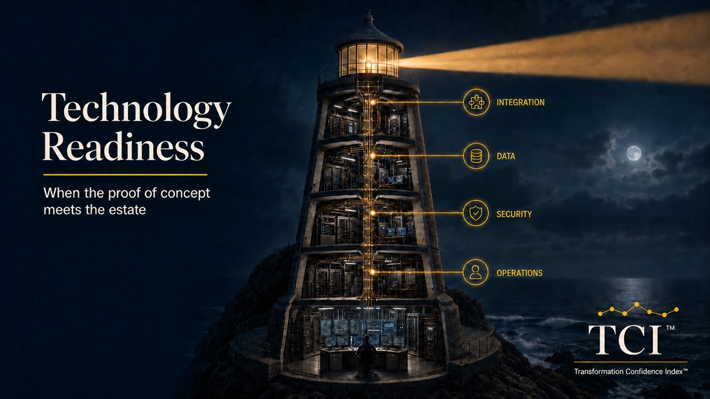
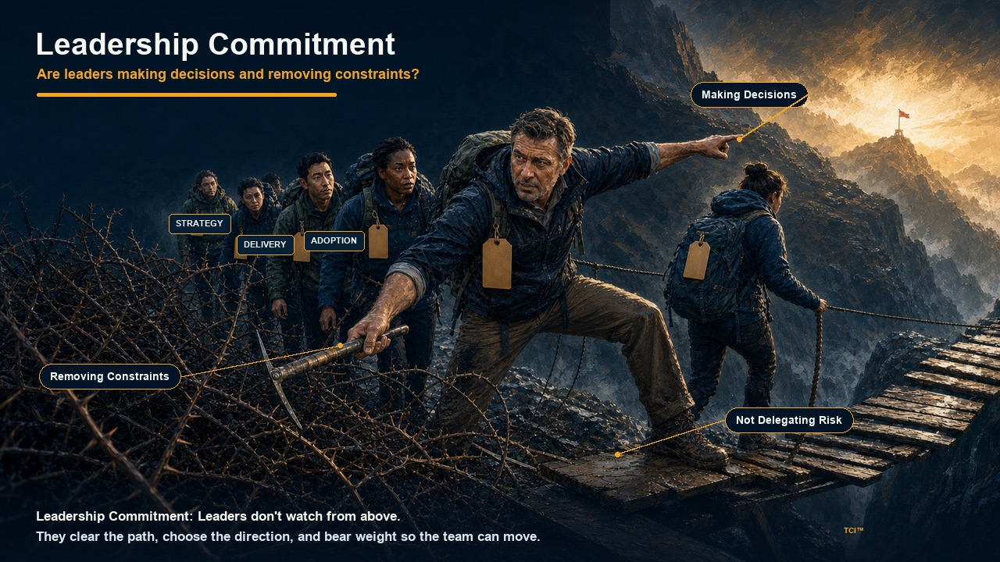
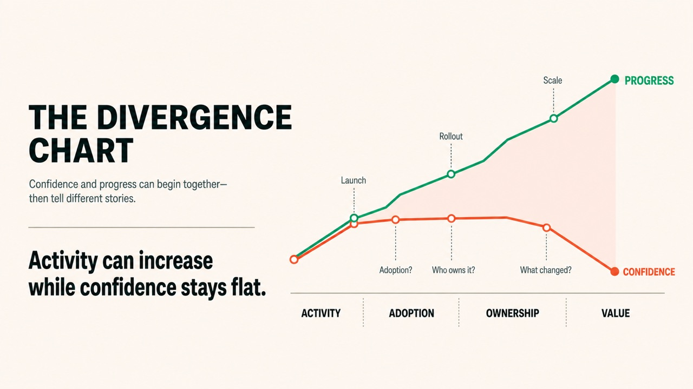
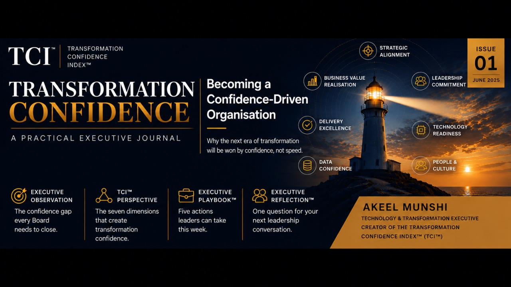

Data & AI confidence: why AI starts with trust
An incomplete record can change who gets an opportunity. Trust in AI starts with the data, decisions and accountability behind its output.
Transformation Confidence Briefing
A concise executive briefing on transformation value, technology platforms, delivery systems and leadership confidence.
Published editions
An incomplete record can change who gets an opportunity. Trust in AI starts with the data, decisions and accountability behind its output.

Issue 5The evidence appears in the work. The platform is live.

Issue 4The proof of concept worked. Then somebody asked about 2am. Can the architecture, data, controls and operating teams carry the technology after launch?

Issue 3A sponsor has been named and the money is there. The programme still can't move. Two executives want their work at the front of the same delivery queue.

Issue 2A transformation dashboard can stay green for months while the case for further investment weakens. Progress shows whether work is moving. Confidence asks whether it is making the organisation stronger.

Issue 1Why leaders need a better way to judge whether transformation is creating sustainable business value.
What to expect
Evidence, assurance and leadership decisions.
Operating models, product thinking and business value.
Delivery systems, culture and operational performance.
Governance, accountability and organisational change.